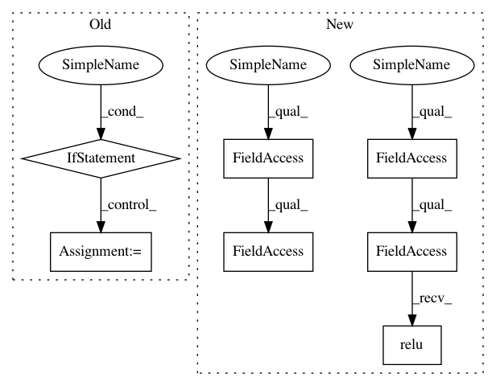

d9421968d52736a2c1d84d26ef2c335a1be4511b,examples/pointnet++_part_seg/pointnet2_part_seg.py,PointNet2PartSegmentNet,forward,#PointNet2PartSegmentNet#Any#,226
Before Change
def forward(self, data):
assert hasattr(data, "pos")
if not hasattr(data, "x"):
data.x = None
data_in = data.x, data.pos, data.batch
sa1_out = self.sa1_module(data_in)
sa2_out = self.sa2_module(sa1_out)
After Change
fp2_out = self.fp2_module(*fp3_out, *sa1_out)
x, _, _ = self.fp1_module(*fp2_out, *sa0_out)
x = F.relu(self.lin1(x))
x = F.dropout(x, training=self.training)
x = self.lin2(x)
x = F.dropout(x, training=self.training)
x = self.lin3(x)
return F.log_softmax(x, dim=-1)
In pattern: SUPERPATTERN
Frequency: 3
Non-data size: 7
Instances
Project Name: rusty1s/pytorch_geometric
Commit Name: d9421968d52736a2c1d84d26ef2c335a1be4511b
Time: 2019-05-22
Author: matthias.fey@tu-dortmund.de
File Name: examples/pointnet++_part_seg/pointnet2_part_seg.py
Class Name: PointNet2PartSegmentNet
Method Name: forward
Project Name: rusty1s/pytorch_geometric
Commit Name: d9421968d52736a2c1d84d26ef2c335a1be4511b
Time: 2019-05-22
Author: matthias.fey@tu-dortmund.de
File Name: examples/pointnet++_part_seg/pointnet2_part_seg.py
Class Name: PointNet2PartSegmentNet
Method Name: forward
Project Name: KaiyangZhou/deep-person-reid
Commit Name: 2e5b28b3d9dde5865ffbdedceead869fccad9e93
Time: 2018-04-28
Author: k.zhou@qmul.ac.uk
File Name: models/SqueezeNet.py
Class Name: SqueezeNet
Method Name: forward
Project Name: rusty1s/pytorch_geometric
Commit Name: cf1cc19bb79ae4128ef5437279de475835374a46
Time: 2019-03-19
Author: matthias.fey@tu-dortmund.de
File Name: benchmark/runtime/dgl/rgcn.py
Class Name: BaseRGCN
Method Name: forward